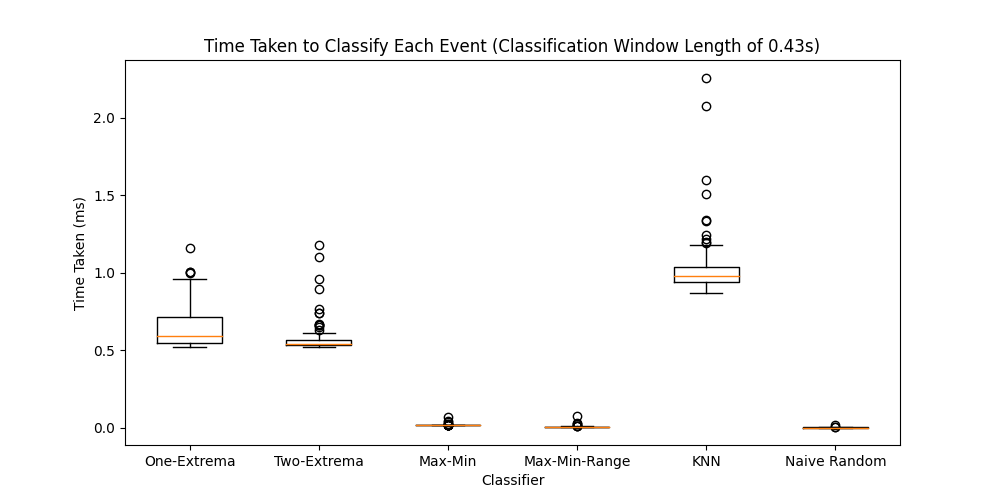

Making Space Invaders Fun and Accessible with Eye-Movement Gesture Control¶
Executive Summary¶
Re-imagining Space Invaders with gesture control brings with it great commercial promise. Additionally, our product can act as a learning tool to introduce individuals, particularly children, to gesture control technology; a need that will inevitably grow as gesture control becomes more integrated into our everyday lives.
Using a Spiker Box from Backyard Brains [BYB], our team performed a plethora of experiments to develop an optimal data collection strategy. We chose left and right eye movements to be the controls of our game and recorded the data with electrodes placed horizontally at an optimal spacing of 3cm. Markers were placed at -45\(^\circ\) and 45\(^\circ\) (relative to centre) to improve signal consistency. A calibration period was introduced to control for inter-subject variability.
We used this data to develop a streaming algorithm. By optimising event detection and classification using a sequence of grid searches, the Max-Min-Range classifier had the best tradeoff between latency and accuracy, and hence we chose it for our product.
The optimised classifier was then integrated with the Space Invaders game using inter-process communication and the prototype worked successfully.
Motivation & Background¶
Over the past two decades, profound advancements in technology such as facial recognition, gesture control, virtual assistants and other instances of machine learning have gradually been integrated into everyday life. With virtual reality worth over $21 billion alone [VR21], the gaming industry is evidently undergoing a similar transformation. The financial success of games such as Pokemon Go, which used augmented reality to re-develop the themes and goals of its franchise, is reason enough to design and implement a game that is similarly revamped by one of these technological advancements.
This project uses gesture control, one of these technological advancements, to re-develop Space Invaders to be played with left and right eye movements. Space Invaders is an iconic 80’s game that grossed an equivalent of $13 billion [con21], proving the market potential for a re-imagined version.
Our target market is anyone interested in leading technologies and gaming, akin to Pokemon Go’s and the original Space Invaders audience. A short survey was conducted and out of 33 people, 85% said they would be interested in this version of Space Invaders. This demonstrates potential commercial success with a remastered launch.
The fundamental aim of this project is to develop a working prototype for Space Invaders with eye control. This involves collecting data, designing and optimising a streaming classifier capable of distinguishing left and right eye movement,s and integrating this into a Space Invaders game. This becomes an arduous task if solely physics or data science undertook this project. In particular, physics is responsible for collection of representative data and data science will use this data to build and optimise a streaming classifier. Both disciplines cooperated to design an effective workflow, outlined in Fig. 1, to achieve the project aim. Thus, using the skills and knowledge of Physics and Data Science, a well-tested gesture controlled version of Space invaders can be developed.

Fig. 1 Workflow diagram illustrating the process undergone by both Physics and Data Science disciplines in the re-development of the game Space Invaders.¶
Methods¶
Dependencies¶
import os
import numpy as np
import pandas as pd
from scipy.io import wavfile
import matplotlib.pyplot as plt
import time
from scipy.fft import fft, fftfreq, fftshift
from scipy import signal
from copy import deepcopy
from catch22 import catch22_all
import catch22
from sklearn.tree import DecisionTreeClassifier
from sklearn.feature_selection import RFECV
from sklearn.neighbors import KNeighborsClassifier
from numba import njit
from weighted_levenshtein import lev
import struct
import warnings
import serial
warnings.filterwarnings('ignore')
# Update this to point to the report folder
PATH = "../"
# To run all computation, change to True. Otherwise, precomputed files will be loaded instead.
compute_all = False
# If running, ensure the following line is commented out. It disables plots for knitting to html purposes.
%matplotlib agg
# Set seed for reproducibility
np.random.seed(420)
# Path to outputs folder
OUT_PATH = PATH + "report_outputs/"
# Path to data
IN_PATH = PATH + "data/"
# Path to other file dependencies
DEP_PATH = PATH + "requirements/other_files/"
Experimentation & Data Collection¶
In reference to Fig. 1, the first step in the re-development of Space Invaders requires designing the data collection protocol to collect data representative of the Space Invaders application. The streaming data was collected using a Backyard Brains Spikerbox [BYB].
Physical Experiments Performed¶
We first experimented with various muscle movements, such as raising eyebrows, blinking, and smiling, and found that each generated a different signal shape. Left and right eye movements were the next investigated and produced distinguishable signals as shown in Fig. 2, and hence were the movements chosen for further experimentation.
Left-right movement experimentation involved varying the angle and distance of the electrodes. This was shown to change the quality drastically. Furthermore, we altered the distance that the subject moved their eyes by placing physical markers at different spacings to act as targets. This also affected signal quality but improved consistency. Aditionally, we experimented with different time between movements, performing sequences in quick and slow succession. And lastly, we experimented on different subjects and investigated the inter-subject variability.
Findings¶
Left and right signals produced the most distinguishable shapes, and so were chosen as the gestures for our game. The experimental design that produced the cleanest and most consistent signals incorporated the following:
Electrodes spaced 3cm apart in a horizontal configuration above the eyebrow.
Quick eye movements at varied intervals to simulate gameplay.
Left and right markers placed at -45\(^\circ\) and 45\(^\circ\) relative to the middle.
Data was collected from more than one individual to get a representative sample.
A calibration window was recommended to mitigate against the significant inter-subject variability.

Fig. 2 Examples of the signal shape of left and right eye movements, as well as an example of noise that we want the classifier to be robust to.¶
Collection of Data¶
By incorporating the points outlined in Findings, 8 wave files (.wav) were prepared to the following specifications:
50s in length
First 5s is a calibration period - no movements performed
A sequence of left and right movements are performed for the remaining 45s at varying intervals.
Each file is accompanied with a labels textfile (.txt) containing the timestamps and labels of every event in the wavefile. ‘1’ corresponds to a left eye movement, and ‘2’ corresponds to a right eye movement.
Each .wav file has a range of [0, 1024], but are centred to [-512, 512] within the
load_datafunction defined below.
Two of the eight files were randomly selected as the test set, and the rest were assigned to the training set.
def load_data(path, fnames, scale_factor = 1, shift_factor = -512, fix_alessandro=False, offsets=None):
waves = {}
labels = {}
for file in fnames:
# Load in wave file
samprate, wav_array = wavfile.read(path+file+".wav")
wav_array = wav_array*scale_factor
wav_array += shift_factor
# Fix the bug in alessandro's code
if fix_alessandro:
fixed_wav = []
step = 999
offset = offsets[file]
for j, i in enumerate(range(offset, len(wav_array)-step, step)):
if j == 0:
fixed_wav.append(np.flip(wav_array[0:i+step]))
fixed_wav.append(np.flip(wav_array[i:i+step]))
waves[file] = np.concatenate(fixed_wav)
else:
waves[file] = wav_array
# Load in label file
labels_dat = pd.read_csv(path+file+".txt", sep=",\t", skiprows=1)
labels_dat.columns = ["label", "time"]
labels_dat.label = ["L" if label == 1 else "R" for label in labels_dat.label]
labels[file] = labels_dat
print(f"Successfully loaded {len(waves)} wavefiles:")
print("\n".join(sorted(waves.keys())))
return waves, labels
fnames = ["data1", "data2", "data3", "data4", "data5", "data6", "data7", "data8"]
# Offsets to fix the error in alessandro's code
offsets = {"data1":0,
"data2":0,
"data3":0,
"data4":0,
"data5":-5,
"data6":0,
"data7":-1,
"data8":0}
# Randomly select two files for the test set, remainder as training
test_files = np.random.choice(fnames, 2, replace=False)
training_files = list(set(fnames) - set(test_files))
# Training Data
waves, labels = load_data(
IN_PATH, training_files, scale_factor = 1, shift_factor = -512, fix_alessandro=True, offsets=offsets)
# Test Data
test_waves, test_labels = load_data(
IN_PATH, test_files, scale_factor = 1, shift_factor = -512, fix_alessandro=True, offsets=offsets)
# Define Calibration Window and Sample Rate: 10,000 Hz
calibration_window_sec = 5
samprate = 10_000
Successfully loaded 6 wavefiles:
data1
data2
data3
data4
data6
data8
Successfully loaded 2 wavefiles:
data5
data7
# Dictionaries to convert singular timestamps in the labels dataframe to
# the time interval of the entire event and the first hump
# First hump
time_buffers_hump = {
"data1":(-0.3, 0.55),
"data2":(-0.3, 0.55),
"data3":(-0.3, 0.55),
"data4":(-0.5, 0.75),
"data5":(-0.5, 0.75),
"data6":(-0.5, 0.75),
"data7":(-0.5, 0.75),
"data8":(-0.5, 0.75)
}
# Whole wave
time_buffers_whole = {
"data1":(-0.2, 1.15),
"data2":(-0.2, 1.15),
"data3":(-0.2, 1.15),
"data4":(-0.4, 1.35),
"data5":(-0.4, 1.35),
"data6":(-0.4, 1.35),
"data7":(-0.4, 1.35),
"data8":(-0.4, 1.35),
}
Streaming Algorithm Design¶
To begin the development of the classifier, we must design the basic structure of our streaming algorithm. The algorithm will consist of two parts, the first is event detection, and the second is classification. As the streaming data comes in, we will only keep a sliding window at the front of the stream in memory. This window updates in discrete intervals of some buffer length. We will deem this window the classification window.
Within that classification window, a smaller window is fixed, sliding along with the classification window. This subset of the classification window is where we will test for an event, and is hence called the detection window.
Each time the window is updated by the stream, a statistic is generated from the detection window and tested against a threshold to deterimine whether there was an event. To minimise false positives, this criterion will need to pass consecutive_event_triggers number of times.
Once the event criterion has passed consecutive_event_triggers times, we pass the classification window to the classifier algorithm and block the classifier from detecting another event. When the event criterion has failed consecutive_nonevent_reset times, we prime the streaming algorithm to predict events again. This is to stop the algorithm from detecting the same event twice. These parameters were optimised using a gridsearch, the details of which can be found in Triggers and Reset Optimisation.
# Function that reads in the kth <inputBufferSize> sized segment of the array
# Simulates streaming condition on recorded wavefiles.
def read_arduinbro(wav_array, inputBufferSize, k):
if inputBufferSize*(k+1) < len(wav_array):
data = wav_array[(inputBufferSize*(k)):(inputBufferSize*(k+1))]
else:
data = wav_array[(inputBufferSize*(k))::]
return np.flip(data)
# Streaming classifier as described above
def streaming_classifier(
wav_array, # Either the array from file (or ser if live = True)
samprate,
classifier,
input_buffer_size_sec = 0.1, # Buffer size in seconds
store_events = False, # Whether to return the classification window array for
# debugging purposes
store_times = False, # Store time taken for each classification
live = False, # If live
FIFO_filename = None,
create_FIFO_msg = None,
read_arduino = None,
process_data = None,
classifier_params = {},
classification_window_size_sec = 1.5, # Total detection window [s]
calibration_window_size_sec = 5, # The length of the calibration period to define the threshold
calibration_statistic_function = None, # Function that calculates the calibration statistic
detection_window_size_sec = 0.5,
detection_window_offset_sec = 0.5,
event_test_statistic_function = None, # Function that calculates the test statistic
event_threshold_factor = 0.5, # The scale factor of the calibration stat that will become
# the threshold
flip_threshold = False, # Threshold is a lower bound if true, upper bound if false
consecutive_event_triggers = 3, # How many threshold triggers need to occur in a row for an
# event to be called
consecutive_nonevent_reset = 10 # How many threshold failures need to occur in a row for the
# classifier to be primed for a new event
):
# Connect to fifo
if FIFO_filename is not None:
fifo = os.open(FIFO_filename, os.O_WRONLY)
if store_events:
predictions_storage = []
if store_times:
classification_times = []
predictions = ""
predictions_timestamps = []
# Initialise variables
N_loops_over_window = classification_window_size_sec//input_buffer_size_sec
input_buffer_size = int(round(input_buffer_size_sec * samprate))
detection_window_offset = int(round(detection_window_offset_sec * samprate))
detection_window_size = int(round(detection_window_size_sec * samprate))
# Initialise Calibration
calibrate = True
N_loops_calibration = calibration_window_size_sec//input_buffer_size_sec
# Initialise Event History
num_event_history = max(consecutive_event_triggers,
consecutive_nonevent_reset) + 1
event_history = np.array([False]*num_event_history)
# Determine length of stream
if live:
N_loops = np.inf
else:
total_time = len(wav_array)/samprate
N_loops = (total_time*samprate)//input_buffer_size
# Prime the classifier for new event
primed = True
### Start stream ###
k = 0
while k < N_loops:
if live:
data = read_arduino(wav_array,input_buffer_size)
data_temp = process_data(data)
else:
data_temp = read_arduinbro(wav_array, input_buffer_size, k)
if k < N_loops_over_window:
if k == 0:
data_cal = data_temp
data_window = data_temp
else:
data_window = np.append(data_temp, data_window)
if calibrate:
data_cal = np.append(data_temp, data_cal)
k+=1
continue
else:
data_window = np.roll(data_window,len(data_temp))
data_window[0:len(data_temp)] = data_temp
if calibrate:
data_cal = np.append(data_temp,data_cal)
if (k > N_loops_calibration):
cal_stat = calibration_statistic_function(data_cal)
event_threshold = cal_stat*event_threshold_factor
calibrate = False
k+=1
continue
# Event Detection
# Take detection window from classification window
interval = data_window[detection_window_offset:(detection_window_offset + detection_window_size)]
test_stat = event_test_statistic_function(interval) # Calculate test stat
# Test threshold
if flip_threshold:
is_event = (test_stat < event_threshold)
else:
is_event = (test_stat > event_threshold)
# Record History
event_history[1::] = event_history[0:-1]
event_history[0] = is_event
# if event, pass window to classifier
if np.all(event_history[0:consecutive_event_triggers]) and primed:
if store_times:
start = time.time_ns()
prediction = classifier(data_window, samprate, **classifier_params)
if store_times:
end = time.time_ns()
classification_times.append(end - start)
if store_events:
predictions_storage.append(data_window)
# Record prediction and time interval of event
predictions += prediction
end_time = round(k*input_buffer_size_sec, 2)
start_time = round(end_time - classification_window_size_sec, 2)
predictions_timestamps.append((start_time, end_time))
# Pipe it up
if FIFO_filename is not None:
msg = create_FIFO_msg(prediction)
os.write(fifo, msg)
# Unprime
primed = False
# Check if condition for priming has been met
if np.all(~event_history[0:consecutive_nonevent_reset]):
primed = True
k += 1
if FIFO_filename is not None:
os.close(fifo)
if store_events and store_times:
return predictions, predictions_timestamps, predictions_storage, classification_times
elif store_events:
return predictions, predictions_timestamps, predictions_storage
elif store_times:
return predictions, predictions_timestamps, classification_times
else:
return predictions, predictions_timestamps
Optimisation¶
We optimise the streaming algorithm in two dependent stages as shown in Fig. 1. The first stage is to optimise event detection by choosing the best test statistic and threshold to apply over the detection window. The best test statistic will be the statistic that maximises the contrast between event and non-event regions, and the threshold will be the threshold that maximises the \(F_1\)-score on the training set.
Once event detection is optimised, we will carry over our findings to begin optimising the classifiers using the training set. Once all classifiers are optimised, we will choose the classifier with the best accuracy on the test set based on a Levenshtein distance weighted to reflect the gaming application.
Event Detection¶
Test Statistic¶
The first component to optimising event detection requires choosing the best test statistic to calculate from the detection window. To do this, we first define 5 possible candidates for the test statistic. These candidates were chosen because they were deemed likely to be effective in distinguishing events from non-events.
# Define Test Stat Functions
# due to their sine wave-like shape, events have a larger range than non-events
def ts_range(x):
return np.max(x) - np.min(x)
# the range but using the middle half of the distribution to reduce influence from outliers
def ts_IQR(x):
return np.quantile(x, 0.75) - np.quantile(x, 0.25)
# events have high peaks due to their shape compared to non-events
def ts_abs_max(x):
return np.max(np.abs(x))
# non-events cross the zero line (x-axis) often due to noise,
# while events have long periods over/under the zero line
def ts_zero_crossings(x):
return np.sum(x[0:-1]*x[1::] <= 0)
# Fourier transforms can distinguish between events and non-events due to
def ts_max_frequency(frame, samprate=10000):
fs = samprate
dt = 1/fs
t = np.arange(0, (len(frame)*dt), dt)
# Num samples
N = len(frame)
yf = fft(frame)
xf = fftfreq(N, 1/fs)
np.size(xf)
np.size(t)
f, t, Sxx = signal.spectrogram(frame, fs)
maximum = np.max(Sxx)
threshold = maximum/5;
maximum_Freqs = np.amax(Sxx, 0) # max frequency for each time
return np.amax(maximum_Freqs)
tfn_candidates = {"Range": ts_range,
"IQR": ts_IQR,
"SD": np.std,
"Absolute Max": ts_abs_max,
"Zero Crossings": ts_zero_crossings}
Maximising Contrast¶
To choose the best test statistic from the candidates, we first calculate a series of test statistics using a sliding window over each training file. Next, we define an evaluation metric called contrast. Essentially, contrast is the absolute value of the Welch’s t-test statistic between the set of test statistics for event regions, and the set of test statistics for non-event regions. It is defined in (1):
where \(E\) is the set of test statistics calculated over event regions, \(E^*\) is the non-event region test statistics, and \(\bar{k}\), \(\sigma_k\) and \(N_k\) are the mean, standard deviation and number of elements in set \(k\) respectively.
def contrast(events, non_events):
pooled_sd = np.sqrt(np.var(events)/len(events) + np.var(non_events)/len(non_events))
return np.abs(np.mean(events, axis=1) - np.mean(non_events, axis=1))/pooled_sd
Next, we perform a gridsearch varying the window length from 0s to 2s and calculating the contrast of each candidate statistic for each window length. The results are shown in Fig. 3. The best test statistic can be seen to be ‘zero crossings’ with an optimal detection window length of 0.43s. Zero crossings is defined in (2).
Where \(\mathbf{x}\) is the detection window with \(n\) samples.
def get_event_regions(wav_array, samprate, labels_dat, time_buffer):
before_buffer = time_buffer[0]
after_buffer = time_buffer[1]
time_seq = np.linspace(1, len(wav_array), len(wav_array))/samprate
left_events_bool = np.array([False]*len(time_seq))
for time in labels_dat.time[labels_dat.label == "L"]:
left_events_bool = (((time_seq > time - before_buffer) &
(time_seq < time+after_buffer)) | left_events_bool)
right_events_bool = np.array([False]*len(time_seq))
for time in labels_dat.time[labels_dat.label == "R"]:
right_events_bool = (((time_seq > time - before_buffer) &
(time_seq < time + after_buffer)) | right_events_bool)
event_bool = left_events_bool | right_events_bool
return event_bool
def get_test_stats(wav_array, window_size, step, test_stat_fns):
test_stats = np.zeros((len(test_stat_fns), len(wav_array)))
all_windows = np.lib.stride_tricks.sliding_window_view(wav_array, window_shape = window_size)
all_windows = all_windows[::step, :]
for i, fn in enumerate(test_stat_fns):
testicles = np.apply_along_axis(fn, -1, all_windows)
for j, teste in enumerate(testicles):
if j == len(testicles)-1:
test_stats[i, (j*step)::] = teste
else:
test_stats[i, (j*step):((j+1)*step)] = teste
return test_stats
def get_contrast(wav_array, samprate, labels_dat, window_size, step, test_stat_fns, contrast_fn, time_buffer):
test_stats = get_test_stats(wav_array, window_size, step, test_stat_fns)
events_bool = get_event_regions(wav_array, samprate, labels_dat, time_buffer)
event_test_stats = test_stats[:, events_bool]
non_event_test_stats = test_stats[:, ~events_bool]
contrast_stat = contrast_fn(event_test_stats, non_event_test_stats)
return contrast_stat
def contrast_all_files(file, window_size, test_stat_fns, samprate,
waves, labels, contrast_fn, step=0.1, time_buffers=time_buffers_whole):
step = int(step*samprate)
for i, key in enumerate(waves.keys()):
wav_array = waves[key]
labels_dat = labels[key]
cont = get_contrast(wav_array, samprate, labels_dat,
window_size, step, test_stat_fns,
contrast_fn, time_buffers[key])
file.write(",".join([str(window_size), key]) + "," + ','.join(np.round(cont, 4).astype(str)) + "\n")
output_filename_event_det_opt = OUT_PATH + "event_detection_optimisation.csv"
if compute_all:
granularity = 100
open(output_filename_event_det_opt, 'w').close() # Clears the file so that the code can be run again.
with open(output_filename_event_det_opt, "a") as file:
for i, x in enumerate(np.linspace(100, 10000, granularity)):
x=int(x)
print(x)
contrast_all_files(
file,
window_size = x,
test_stat_fns = tfn_candidates.values(),
samprate = samprate,
waves = waves,
labels = labels,
step = 0.1,
contrast_fn = contrast,
time_buffers = time_buffers_whole
)
contrasts = pd.read_csv(output_filename_event_det_opt, header=None)
contrasts.columns = ["window_size", "file"] + list(tfn_candidates.keys())
contrasts_total = contrasts.groupby("window_size").mean()
plt.figure(figsize=(7, 7))
for stat in tfn_candidates.keys():
plt.plot(contrasts_total.index/samprate,
np.abs(contrasts_total[stat]),
label = f"{stat} Contrast", alpha = 1)
plt.title("Event Region Contrast vs. Detection Window")
plt.xlabel("Detection Window Length (s)")
plt.ylabel("Contrast (Welch's t-Test Statistic)")
opt_det_window = contrasts_total.index[np.argmax(np.abs(contrasts_total["Zero Crossings"]))]/samprate
opt_det_window_val = np.max(np.abs(contrasts_total["Zero Crossings"]))
plt.vlines(opt_det_window, 0, opt_det_window_val,"r", ":",
label=f"Optimal Point ({round(opt_det_window, 2)}, {round(opt_det_window_val, 2)})")
plt.hlines(opt_det_window_val, 0, opt_det_window,"r", ":")
plt.legend(loc="upper right")
plt.savefig(OUT_PATH+"contrast.png")

Threshold Optimisation¶
Now that we have determined the best test statistic and its corresponding optimal detection window length, we will use these to determine the optimal threshold for event detection. To do this, we perform yet another gridsearch to maximise \(F_1\)-score. Instead of searching for the threshold, we instead search for a factor \(f\) which is used to define the threshold using (3). This was recommended by the physics team in Findings.
Where \(t\) is the threshold, \(f\) is the threshold factor, Z is defined in (2) and \(\mathbf{c}\) is the calibration window.
We have used the \(F_1\)-score to determine the performance of the event detection as it weighs the false positives and false negatives equally. Both false positives and false negatives are undesirable for our application: a false positive would mean an involuntary movement and a false negative would a missed movement, both scenarios endanger the player’s spaceship. \(F_1\)-score is defined in (4).
The results of the gridsearch are displayed below in Fig. 4.
output_filename_thresh_opt = OUT_PATH + "threshold_optimisation.csv"
if compute_all:
with open(output_filename_thresh_opt, "w") as file: # Clear file
for st_scale in np.linspace(0.01, 1, 100):
fps, fns, tps, i = 0, 0, 0, 0
for key in waves.keys():
predictions, predictions_timestamps = streaming_classifier(
waves[key],
samprate,
lambda x,y: "R" if np.random.rand()<0.5 else "L",
input_buffer_size_sec = 0.05,
classification_window_size_sec = opt_det_window,
detection_window_size_sec = opt_det_window,
detection_window_offset_sec = 0,
calibration_window_size_sec = calibration_window_sec,
calibration_statistic_function = lambda x: ts_zero_crossings(x)/len(x),
event_test_statistic_function = lambda x: ts_zero_crossings(x)/len(x),
event_threshold_factor = st_scale,
flip_threshold = True,
consecutive_event_triggers = 3,
consecutive_nonevent_reset = 10
)
before_buffer = time_buffers_hump[key][0]
after_buffer = time_buffers_hump[key][1]
actual_times = [(t-before_buffer, t+after_buffer) for t in labels[key].time]
actual_leftovers = deepcopy(actual_times)
pred_leftovers = deepcopy(predictions_timestamps)
tps += len(actual_times)
for act_times in actual_times:
if act_times[1] < calibration_window_sec:
actual_leftovers.remove(act_times)
continue
for pred_times in predictions_timestamps:
if (act_times[0] < pred_times[1] and act_times[1] > pred_times[0] and
pred_times in pred_leftovers and act_times in actual_leftovers):
actual_leftovers.remove(act_times)
pred_leftovers.remove(pred_times)
tps -= len(actual_leftovers)
fns += len(actual_leftovers)
fps += len(pred_leftovers)
i += 1
fscore = tps/(tps+0.5*(fns+fps))
if (st_scale*100)%10 == 0:
print(st_scale, fscore)
file.write(f"{st_scale},{fscore}\n")
thresholds = pd.read_csv(output_filename_thresh_opt, header=None)
thresholds.columns = ["threshold_factor", "f_score"]
thresh_factors = thresholds.threshold_factor
f_score_list = thresholds.f_score
plt.figure(figsize=(7, 7))
plt.plot(thresh_factors, f_score_list)
plt.title("$F_1$-Score vs. Threshold Factor\n for Zero Crossings")
opt_thresh = np.mean(thresh_factors[f_score_list == np.max(f_score_list)])
opt_fscore = np.max(f_score_list)
plt.vlines(opt_thresh, 0, opt_fscore, "r", ":",
label=f"Optimal Point ({round(opt_thresh, 2)}, {round(opt_fscore, 2)})")
plt.hlines(opt_fscore, 0, opt_thresh, "r", ":")
plt.xlabel("Threshold Factor")
plt.ylabel("$F_1$-Score")
plt.legend(loc = "lower right")
plt.savefig(OUT_PATH+"threshold.png")

Classification¶
Classifiers¶
Now that the event detection has been optimised, we must now optimise classification. To do this, the data science team developed five classifiers, each aiming to capture a different distinguishing feature identified by the physics team in their investigations Experimentation & Data Collection. In particular, One Extrema applies a Savitzky-Golay filter, as per the physicists’ recommendations in Findings, and looks to identify whether the first turning point is a maximum (R) or minimum (L). Two Extrema does the same, but looks for a max followed by a min (R) or vice versa (L). Max-Min essentially does the same as Two Extrema but without filtering. Max-Min-Range applies a correction to Max-Min so that it only considers a point to be a maximum or minimum when it is above a certain threshold distance from the origin, governed by the rng parameter. The optimisation of this parameter can be found in Max-Min-Range Optimisation. Additionally, we developed a knn classifier, the optimisation of which can be found in KNN Optimisation. Finally, we implement a naive classifer for a baseline, which randomly predicts an event as either L or R.
# Prepare Classifier Candidates
# catch22 kNN classifier (using stepwise selected features)
step_csv = DEP_PATH+"catch22_step_selected_features.csv"
catch22_step_training_data = pd.read_csv(step_csv)
X_train = catch22_step_training_data.iloc[:,0:-1]
y_labels = catch22_step_training_data.iloc[:,-1]
neigh = KNeighborsClassifier(n_neighbors=5)
neigh.fit(X_train, y_labels)
# calculates the 5 features selected from catch22, find the 5 nearest neighbours
# calculated using Euclidean distance, then selects the majority classification
def catch22_knn_classifier(arr, samprate, downsample_rate=10):
arr_ds = arr[0::downsample_rate]
arr_list = arr_ds.tolist()
feature_one = catch22.DN_HistogramMode_5(arr_list)
feature_two = catch22.SB_BinaryStats_mean_longstretch1(arr_list)
feature_three = catch22.FC_LocalSimple_mean1_tauresrat(arr_list)
feature_four = catch22.DN_OutlierInclude_p_001_mdrmd(arr_list)
feature_five = catch22.SP_Summaries_welch_rect_area_5_1(arr_list)
test_features = [[feature_one, feature_two, feature_three, feature_four, feature_five]]
return neigh.predict(test_features)[0]
# wave is smoothed using Savitzky-Golay Filter, then decides whether the event is
# a left or right depending on whether the first turning point is a max or min
def one_extrema_smoothing_classifier(arr, samprate, downsample_rate=10, window_size_seconds=0.3, max_loops=10):
arr_ds = arr[0::downsample_rate]
fs = samprate/downsample_rate
dt = 1/fs
t = np.arange(0, (len(arr_ds)*dt), dt)
# Smooth wave
window_length = int(window_size_seconds*samprate/downsample_rate + 1)
filtered_arr = signal.savgol_filter(arr_ds, window_length, 1)
# Indices of positive maxima
max_locs = np.array(signal.argrelextrema(filtered_arr, np.greater)[0])
max_vals = filtered_arr[max_locs]
max_locs = max_locs[max_vals > 0]
# Indices of negative minima
min_locs = np.array(signal.argrelextrema(filtered_arr, np.less)[0])
min_vals = filtered_arr[min_locs]
min_locs = min_locs[min_vals < 0]
max_min_locs = np.append(max_locs, min_locs) # Appended indices
max_min_values = filtered_arr[max_min_locs] # Values of above indices
abs_max_min_values = np.abs(max_min_values) # Absolute value of those values
# A vector with a length equal to the number of minimums: all '-1' to say minimum
numMin = [-1]*len(min_locs)
numMax = [1]*len(max_locs) # Same for max, but with '1'
isMin = np.append(numMax, numMin)
val_and_idx = np.vstack([abs_max_min_values, max_min_locs, isMin])
# Sort the magnitudes of the extrema in descending order (-1 indicates descending)
val_and_idx_sorted = val_and_idx[ :, (-1*val_and_idx[0]).argsort()]
if val_and_idx_sorted.shape == (3, 0):
if val_and_idx_sorted[2] == -1:
return 'L'
elif val_and_idx_sorted[2] == 1:
return 'R'
else:
return "_"
else:
if val_and_idx_sorted[2, 0] == -1:
return 'L'
elif val_and_idx_sorted[2, 0] == 1:
return 'R'
else:
return "_"
# wave is smoothed using Savitzky-Golay Filter, then decides whether the event is
# a left or right depending on the order of the maximum and minimum turning points
def two_extrema_smoothing_classifier(arr, samprate, downsample_rate=10,
window_size_seconds=0.3, max_loops=10):
arr_ds = arr[0::downsample_rate]
fs = samprate/downsample_rate
dt = 1/fs
t = np.arange(0, (len(arr_ds)*dt), dt)
# Smooth wave
window_length = int(window_size_seconds*samprate/downsample_rate + 1)
filtered_arr = signal.savgol_filter(arr_ds, window_length, 1)
# Indices of positive maxima
max_locs = np.array(signal.argrelextrema(filtered_arr, np.greater)[0])
max_vals = filtered_arr[max_locs]
max_locs = max_locs[max_vals > 0]
# Indices of negative minima
min_locs = np.array(signal.argrelextrema(filtered_arr, np.less)[0])
min_vals = filtered_arr[min_locs]
min_locs = min_locs[min_vals < 0]
max_min_locs = np.append(max_locs, min_locs) # Appended indices
max_min_values = filtered_arr[max_min_locs] # Values of above indices
abs_max_min_values = np.abs(max_min_values) # Absolute value of those values
# A vector with a length equal to the number of minimums: all '-1' to say minimum
numMin = [-1]*len(min_locs)
numMax = [1]*len(max_locs) # Same for max, but with '1'
isMin = np.append(numMax, numMin)
val_and_idx = np.vstack([abs_max_min_values, max_min_locs, isMin])
# Sort the magnitudes of the extrema in descending order (-1 indicates descending)
val_and_idx_sorted = val_and_idx[ :, (-1*val_and_idx[0]).argsort()]
# We will continue looping until we have an appropriate classification.
# This relies on having the extrema INTERCHANGE between max and min (no two min right next to eachother)
loops = 0
classificationFound = False
while not classificationFound and loops < max_loops:
top_2 = val_and_idx_sorted[:, 0:2] # Take the top two magnitudes
top_2_sorted = top_2[ :, top_2[1].argsort()] # Sort according to the indices of those values
if top_2_sorted.shape != (3, 2): # Break if we run out of turning points
return "_"
# If two min or two max occur one after the other,
# we know we have an inappropriate result so we delete one of those doubled min/max
if top_2_sorted[2, 0]*top_2_sorted[2, 1] > 0:
val_and_idx_sorted = np.delete(val_and_idx_sorted, 1, 1)
else:
classificationFound = True
loops += 1
if top_2_sorted[2, 0] == -1:
return 'L'
elif top_2_sorted[2, 0] == 1:
return 'R'
else:
return "_"
# finds the index of the max and min values in the wave, then classifies
# based on whether the max or min value occurred first
def max_min_classifier(arr, samprate, downsample_rate=10):
arr_ds = arr[0::downsample_rate]
arr_max = np.amax(arr_ds)
arr_min = np.amin(arr_ds)
max_loc = np.where(arr_ds == arr_max)[0][0]
min_loc = np.where(arr_ds == arr_min)[0][0]
if max_loc > min_loc:
return "R"
elif min_loc > max_loc:
return "L"
else:
return "_"
# finds the index of the max and min values in the wave, then checks whether both
# values are outside the range. If both are outside, then classification is based
# on whether max or min value occurred first. Else, if only one is outside, then
# classification is based on whether the max or min's magnitude is larger
@njit
def max_min_range_classifier(arr, samprate, downsample_rate=10, rng = 35):
arr_ds = arr[0::downsample_rate]
arr_max = np.amax(arr_ds)
arr_min = np.amin(arr_ds)
max_loc = np.where(arr_ds == arr_max)[0][0]
min_loc = np.where(arr_ds == arr_min)[0][0]
if arr_max > rng and arr_min < -1 * rng:
if max_loc > min_loc:
return "R"
elif min_loc > max_loc:
return "L"
else:
return "_"
elif arr_max > rng:
return "R"
elif arr_min < -1 * rng:
return "L"
else:
return "_"
# Prepare classifiers for optimisation and plotting
classifiers = {"One-Extrema": one_extrema_smoothing_classifier,
"Two-Extrema": two_extrema_smoothing_classifier,
"Max-Min": max_min_classifier,
"Max-Min-Range": max_min_range_classifier,
"KNN": catch22_knn_classifier,
"Naive Random": lambda x,y: "R" if np.random.rand()<0.5 else "L"}
classifier_parameters = {"One-Extrema": {},
"Two-Extrema": {},
"Max-Min": {},
"Max-Min-Range": {"rng":35},
"KNN": {},
"Naive Random": {}}
classifier_colours = {"One-Extrema": "tab:blue",
"Two-Extrema": "tab:cyan",
"Max-Min": "tab:olive",
"Max-Min-Range": "tab:brown",
"KNN": "tab:pink",
"Naive Random": "tab:red"}
Accuracy Metric¶
To estimate the accuracy of our classifier, we have opted to use weighted Levenshtein distance. The Levenshtein distance measures the minimum number of deletions, insertions or replacements required to transform one sequence into the other. Our metric weighs replacements and deletions more heavily than insertions, counting a replacement and a deletion as 1.25 and insertions as 0.5. When playing the game, a misclassification (fixed by replacement) would be quite costly, as the game would be doing the opposite of the instruction given. A false positive event (fixed by a deletion) where it detects an event when no instruction was given would also be costly. In contrast, a missed event (fixed by an insertion) is far less costly as the player can simply redo the eye movement. This justifies using the weighted Levenshtein distance to calculate accuracy. Once the weighted Levenshtein distance is calculated, the accuracy is computed using (5):
where \(a\) is the accuracy, \(l\) is the length of the actual sequence and \(D_{lv}\) is the weighted Levenshtein distance.
def my_lev_dist(prediction, actual, sub_L_cost = 1.25, sub_R_cost = 1.25,
sub_under_score_cost = 0.5, delete_under_score_cost = 0,
delete_L_cost = 1.25, delete_R_cost = 1.25):
substitute_costs = np.ones((128, 128), dtype=np.float64)
substitute_costs[ord('L'), ord('R')] = sub_L_cost
substitute_costs[ord('R'), ord('L')] = sub_R_cost
substitute_costs[ord('_'), ord('L')] = sub_under_score_cost
substitute_costs[ord('_'), ord('R')] = sub_under_score_cost
delete_costs = np.ones(128, dtype=np.float64)
delete_costs[ord('_')] = delete_under_score_cost
delete_costs[ord('L')] = delete_L_cost
delete_costs[ord('R')] = delete_R_cost
return lev(prediction, actual, substitute_costs = substitute_costs, delete_costs = delete_costs)
Latency Analysis¶
The actual time taken for each algorithm to classify is negligible when compared to the time taken for the classificaiton window to come in (see Latency Analysis for more information). This means the lag is dominated by the length of the classification window. Hence, the accuracy defined in (5) must be balanced with a minimum classification window length to optimise the classifier’s performance.
Classifier Optimisation¶
Once the metric has been defined, a series of grid searches were performed for classifier to optimise the classification window size. Using the detection window as a base, an extension was applied on either side of the detection window to slowly widen the classification window. This extension was varied from 0s to 1.65s in increments of 0.00825s and the accuracy at each step is shown in Fig. 5.
output_filename_cls_opt = OUT_PATH + "classifier_optimisation.csv"
if compute_all:
open(output_filename_cls_opt, 'w').close() # Clear the file
search_space = (2-opt_det_window)/2
granularity = 200
for classifier_label, classifier in classifiers.items():
print(classifier_label)
for i, w in enumerate(np.linspace(0, search_space, granularity)):
w = max(1e-5, w)
if i%(granularity//10) == 0:
print(f"{i} of {granularity}")
classification_window = opt_det_window+2*w
buffer_size = 0.05
for i, key in enumerate(waves):
predictions, predictions_timestamps = streaming_classifier(
waves[key],
samprate,
classifier,
classifier_params=classifier_parameters[classifier_label],
input_buffer_size_sec = buffer_size,
classification_window_size_sec = classification_window,
detection_window_size_sec = opt_det_window,
detection_window_offset_sec = w,
calibration_window_size_sec = calibration_window_sec,
calibration_statistic_function = lambda x: ts_zero_crossings(x)/len(x),
event_test_statistic_function = lambda x: ts_zero_crossings(x)/len(x),
event_threshold_factor = opt_thresh,
flip_threshold = True, # Threshold is a lower bound, so true
consecutive_event_triggers = 3,
consecutive_nonevent_reset = 10
)
actuals = "".join(labels[key].label)
lev_dist = my_lev_dist(predictions, actuals)
acc = max((len(actuals) - lev_dist), 0)/len(actuals)
with open(output_filename_cls_opt, "a") as file:
file.write(",".join([classifier_label, str(classification_window),
key, predictions, actuals, str(lev_dist), str(acc)]) + '\n')
results = pd.read_csv(output_filename_cls_opt, header=None)
results.columns = ["classifier", "window_size", "file", "predicted", "actual", "lev_dist", "accuracy"]
results_agg = results.groupby(["window_size", "classifier"]).mean()
results_agg.reset_index(inplace=True)
optimal_cl_windows = {}
plt.figure(figsize=(7, 7))
for classifier in results.classifier.unique():
filt = results_agg.classifier == classifier
max_arg = np.argmax(signal.savgol_filter(results_agg[filt].accuracy, 15, 1))
max_val = np.max(signal.savgol_filter(results_agg[filt].accuracy, 15, 1))
optimal_cl_window = np.array(results_agg[filt].window_size)[max_arg]
optimal_cl_windows[classifier] = optimal_cl_window
plt.plot(results_agg[filt].window_size, signal.savgol_filter(results_agg[filt].accuracy, 15, 1),
label=classifier + f" ({round(optimal_cl_window, 2)},{min(round(max_val, 2), 1.0)})",
color=classifier_colours[classifier])
plt.vlines(optimal_cl_window, 0, max_val, color=classifier_colours[classifier], linestyle="--", alpha=0.3)
plt.ylabel("Weighted Levenshtein Accuracy")
plt.xlabel("Classification Window Length (s)")
plt.title("Classifier Accuracy vs. Classification Window Length")
plt.ylim(0, 1)
plt.xlim(0, 2)
plt.fill_between([0, opt_det_window], 0, 1, color="k", alpha = 0.2, label="Detection Window Lowerbound")
plt.legend(loc="lower right")
plt.savefig(OUT_PATH+"classifier.png")
{kind=link}
Fig. 5 Training accuracy of each classifier as a function of classification window length. The classification window is lower bounded by the detection window, represented by the shaded region. Ideally, we want to minimise window length while maximising accuracy. With this in mind, we see that the Max-Min-Range classifier has the highest accuracy at a window length equal to be the lowerbound of 0.43s. This makes it the most optimal classifier by both accuracy and latency.¶
Evaluation¶
Now that we have optimised each classifier using the training set, we must assess each classifier’s out-of-sample performance. To do this, we calculate the average accuracy on the test set. We found that Max-Min had the highest accuracy of 90% with a window size of 1.23s, closely followed by Max-Min-Range at 88% with a window size of 0.43s (the full results can be found in Test Set Accuracies).
Since Max-Min-Range has good accuracy with a significantly lower window size, we choose it as the classifier to deploy within our game.
output_filename_tst_res = OUT_PATH + "test_results.csv"
if compute_all:
open(output_filename_tst_res, 'w').close() # Clear the file
for classifier_label, classifier in classifiers.items():
print(classifier_label)
offset = (optimal_cl_windows[classifier_label] - opt_det_window)/2
buffer_size = 0.05
for i, key in enumerate(test_waves):
predictions, predictions_timestamps = streaming_classifier(
test_waves[key],
samprate,
classifier,
classifier_params=classifier_parameters[classifier_label],
input_buffer_size_sec = buffer_size,
classification_window_size_sec = optimal_cl_windows[classifier_label],
detection_window_size_sec = opt_det_window,
detection_window_offset_sec = offset,
calibration_window_size_sec = calibration_window_sec,
calibration_statistic_function = lambda x: ts_zero_crossings(x)/len(x),
event_test_statistic_function = lambda x: ts_zero_crossings(x)/len(x),
event_threshold_factor = opt_thresh,
flip_threshold = True,
consecutive_event_triggers = 3,
consecutive_nonevent_reset = 10
)
actuals = "".join(test_labels[key].label)
lev_dist = my_lev_dist(predictions, actuals)
acc = max((len(actuals) - lev_dist), 0)/len(actuals)
with open(output_filename_tst_res, "a") as file:
file.write(",".join([classifier_label, key, predictions, actuals, str(lev_dist), str(acc)]) + '\n')
test_results = pd.read_csv(output_filename_tst_res, header=None)
test_results.columns = ["Classifier", "File", "Predicted", "Actual", "Weighted Levenshtein Distance", "Accuracy"]
test_results = test_results.pivot(index = "File", columns='Classifier', values='Accuracy')
top_accs = test_results.mean().sort_values(ascending=False)
top = test_results.mean().sort_values(ascending=False).index
top_windows = [optimal_cl_windows[k] for k in test_results.mean().sort_values(ascending=False).index]
top_df = pd.DataFrame()
top_df["Classifier"] = top
top_df["Accuracy"] = np.round(np.array(top_accs), 2)
top_df["Window Length (s)"] = np.round(np.array(top_windows), 2)
Summary of results¶
After experimenting with different methods of data collection, we found the best data collection method involved spacing the electrodes 3cm apart. Furthermore, performing quick movements produced the clearest signal and limiting movements to left and right simplified the classifier so that we could effectively achieve the aim.
Using the data collected, we found the optimal test statistic was zero crossings at a detection window size of 0.43s with a threshold factor was 0.33, show in Fig. 3 and Fig. 4. We decided to use the Max-Min-Range classifier with a classification window size equal to the aforementioned detection window. We chose this classifier because of its excellent performance in both accuracy and latency, which will make our game accurate and responsive.
Finally, to integrate the classifier into Space Invaders, we adapted a team member’s existing Java implementation into Python. The optimised Max-Min-Range classifier was then merged with the game. Despite both working well independently, the combined product was initially quite laggy. This was resolved by running the classifier and game separately and having them interact via inter-process communication. Details of the deployment can be found in Space Invaders Deployment Code.
Discussion¶
Initially, the Spike Recorder software was used to record the training dataset. However, the data was drastically different when transitioning to live data from Python. Both the threshold and shape of the signals varied between the two. This led to us executing the entire pipeline outlined in Fig. 1 again with new data recorded directly from Python.
The data obtained from the Python software had a tendency to be volatile as the random noise varied greatly with different people. This was solved by the physicists recommendation of a calibration period; having the player keep their eyes still for 5s at the start of play. This allowed us to define the threshold more robustly using (3). Additionally, some classifiers aimed to address noise by using a Savitzky-Golay filter.
Latency was a major problem in the initial stages of this project. There was a significant time delay between the eye movement and the streaming_classifier function being able to classify the eye movement. This was overcome by significantly reducing the window size. Additionally, when running the streaming_classifier function and the game in one file, we encountered significant lag. We resolved this by separating the function and the game into different files, running them simultaneously and interfacing them using inter-process communication detailed in Space Invaders Deployment Code.
We focused on optimising the core mechanics of left and right eye movements. In future, additional features could be added to the game such as blinking or muscle movements to implement controlled shooting. Multiplayer could also be implemented in a similar way. Making the game a self-contained application would also improve the ease of use for a consumer market.
Conclusion¶
Throughout this project, physics and data science disciplines collaborated to achieve the aim of developing prototype of gesture-controlled Space Invaders. By developing and evaluating numerous classifiers using curated data from the physicists, we were able to develop a fast and accurate classifier for use in a functioning game. Due to the time restrictions, we were limited in the amount of controls we were able to implement, having only left and right eye movements. However, we aspire to develop future upgrades to the game. These include having user-inputted shooting executed by another control such as blinks or muscle movements and creating a multiplayer option. Despite the challenging nature of this project, we were able to combine data science and physics expertise to develop a very successful final product.
Contributions¶
Student 490423356 was responsible for editing the given python streaming code to save the input as a wav file, and automate logging the time keys were pressed during data collection (key presses were used to signal the event an eye movement). They aided in the construction and implementation of physical experiments to determine the most appropriate final experimental design.They implemented an event detection method which uses Fourier transforms, that was evaluated by the group in the test statistic graphical analysis. They performed research on six different types of normalisation techniques that could be used for preprocessing an input signal. Some of these were transformed into event detection statistics, such as Z-Score. They additionally proposed the idea to have a calibration period, which the group agreed is a better method to generalise the signal for all users rather than normalisation. They designed and implemented an adaptation of the existing two and three extrema classifiers, to make them more robust to unexpected changes in the signal. This student wrote the speech for the final presentation. They were also responsible for organising meeting times and having the PowerPoint ready for each Monday presentation (with help from other group members).
Student 490413128: Wrote the Max-Min classifier and the Max-Min-Range classifier. Significantly contributed to writing the code for the evaluation. Researched and implemented Inter-Process Communication. Collected a lot of data. Contributed significantly to writing the discussion section. Helped in writing the methods section. Wrote the results section of the report. Rewrote the executive summary so that the report fell within the word limit. Helped in creating the Powerpoint for each Monday presentation.
480366780 contributed to this project through generating reliable and robust data that was used to evaluate the accuracy of the classifiers. They worked on finding distinct signals that we were able to be incorporated as the controls of the game. They evaluated the optimal positioning of the electrodes and distance the eye must move to generate the clearest and most noticeable signals. They created a survey that allowed us to gain a better understanding of the public’s interest towards our project which also helped shape our motivation. They helped with implementing Fourier transforms as an alternative option for event detection and aided in the research of using pipes. They created the slides for the final presentation, helped write the speech and wrote parts of the final report. They also helped research Inter-Process Communication.
Student 490155963 contributed to this project by converting the Space Invaders he had from Java into Python. He also helped with recording some of the data. He was the primary team member working on merging the classifier and game together, and reducing the lag the combined product was producing. He implemented the classifier on the game with the help of a pipe data processing structure.
Student 490388088 contributed to this project by exploring a machine-learning alternative to the rule-based classifiers the other data science members made. He explored how to use catch22, performed feature selection, and created a k-nearest neighbours classifier to complement the other classifiers. He also made great contributions to the editing of the report to ensure it flowed and well represented the project as a whole.
Student 480380144: Developed the structure for our streaming classifier, translating it from R. Also designed the data science pipeline to optimise our classifiers. This involved designing and performing experiments to optimise for each of the parameters in the streaming classifier, specifically detection and classification window lengths. Additionally, they played a key role in writing our report, despite breaking their hand two weeks from the due date which meant they could only work effectively on it a few days out from the due date. Their report contributions included setting up Jupyter Book and interlacing the sections with the code for reproducibility. Overall, their most important contribution was providing direction to our group. By laying out the experimental pipeline, it allowed all group members to contribute to the final product more effectively.
Appendix¶
Space Invaders Deployment Code¶
Below is the final classifier used in the game, as well as a link to the game itself and the functions used to connect the two with inter-process communication.
# Code for inter-process communication between the game and the classifier.
def encode_msg_size(size: int) -> bytes:
return struct.pack("<I", size)
def create_msg(content: bytes) -> bytes:
size = len(content)
return encode_msg_size(size) + content
# Functions for Serial
def read_arduino(ser,inputBufferSize):
# data = ser.readline((inputBufferSize+1)*2)
data = ser.read((inputBufferSize+1)*2)
out =[(int(data[i])) for i in range(0,len(data))]
return out
def process_data(data):
data_in = np.array(data)
result = []
i = 1
while i < len(data_in)-1:
if data_in[i] > 127:
# Found beginning of frame
# Extract one sample from 2 bytes
intout = (np.bitwise_and(data_in[i],127))*128
i = i + 1
intout = intout + data_in[i]
result = np.append(result,intout)
i=i+1
return np.flip(np.array(result)-512)
# Final classifier used for Space Invaders
# Connect to spiker box - change to match port
# cport = "/dev/cu.usbserial-DJ00E33Q"
# baudrate = 230400
# ser = serial.Serial(port=cport, baudrate=baudrate)
# inputBufferSize = 1000 # 20000 = 1 second
# buffer_size_sec = inputBufferSize/20000.0
# ser.timeout = buffer_size_sec # set read timeout 20000
# classifier_label = "Max-Min-Range"
# offset = (optimal_cl_windows[classifier_label] - opt_det_window)/2
# buffer_size = 0.05
# streaming_classifier(
# ser,
# samprate,
# classifiers[classifier_label],
# classifier_params=classifier_parameters[classifier_label],
# input_buffer_size_sec = buffer_size_sec,
# classification_window_size_sec = optimal_cl_windows[classifier_label],
# detection_window_size_sec = opt_det_window,
# detection_window_offset_sec = offset,
# calibration_window_size_sec = calibration_window_sec,
# calibration_statistic_function = lambda x: ts_zero_crossings(x)/len(x),
# event_test_statistic_function = lambda x: ts_zero_crossings(x)/len(x),
# event_threshold_factor = opt_thresh,
# flip_threshold = True,
# consecutive_event_triggers = 3,
# consecutive_nonevent_reset = 10,
# live = True,
# FIFO_filename = "space_invaders_ipc",
# create_FIFO_msg = create_msg,
# read_arduino = read_arduino,
# process_data = process_data
# )
The game can be found in the Space_Invaders subfolder within the report folder. To run the game, run space_invaders.py in one terminal, and run the code defined above in another in that order. You will need to ensure the Spiker Box is connected to the correct port via the Serial python package.
Test Set Accuracies¶
Below are the accuracies for all classifiers on the test set, along with their optimal window sizes.
top_df
| Classifier | Accuracy | Window Length (s) | |
|---|---|---|---|
| 0 | Max-Min | 0.90 | 1.23 |
| 1 | Max-Min-Range | 0.88 | 0.43 |
| 2 | One-Extrema | 0.85 | 0.81 |
| 3 | KNN | 0.78 | 0.51 |
| 4 | Two-Extrema | 0.70 | 1.06 |
| 5 | Naive Random | 0.61 | 1.76 |
Latency Analysis¶
Below is the plot showing how long each classifier took to classify every event in the training set. Since the order of magnitude is milliseconds, this justifies focusing on minimising window length as that is of order seconds.
buffer_size_sec = 0.05
all_classification_times = {}
better_all_classification_times = {}
for classifier_label, classifier in classifiers.items():
start = time.time()
for i, key in enumerate(waves):
predictions, predictions_timestamps, times = streaming_classifier(
waves[key],
samprate,
classifiers[classifier_label],
classifier_params=classifier_parameters[classifier_label],
input_buffer_size_sec = buffer_size_sec,
classification_window_size_sec = opt_det_window,
detection_window_size_sec = opt_det_window,
detection_window_offset_sec = 0,
calibration_window_size_sec = 5,
calibration_statistic_function = lambda x: ts_zero_crossings(x)/len(x),
event_test_statistic_function = lambda x: ts_zero_crossings(x)/len(x),
event_threshold_factor = opt_thresh,
flip_threshold = True,
store_times = True,
consecutive_event_triggers = 3,
consecutive_nonevent_reset = 10,
live = False,
)
if classifier_label in better_all_classification_times.keys():
better_all_classification_times[classifier_label] += times
else:
better_all_classification_times[classifier_label] = times
if "times" in all_classification_times.keys():
all_classification_times["times"].append(times)
all_classification_times["classifier"].append(classifier_label)
else:
all_classification_times["times"] = []
all_classification_times["classifier"] = []
all_classification_times["times"].append(times)
all_classification_times["classifier"].append(classifier_label)
for key, val in better_all_classification_times.items():
better_all_classification_times[key] = np.array(val)/1e6
plt.figure(figsize=(10, 5))
plt.boxplot(better_all_classification_times.values(), labels = better_all_classification_times.keys())
plt.ylabel("Time Taken (ms)")
plt.xlabel("Classifier")
plt.title("Time Taken to Classify Each Event (Classification Window Length of 0.43s)")
plt.savefig(OUT_PATH+"classifier_times.png")

Triggers and Reset Optimisation¶
Below is the gridsearch used to optimise consecutive_event_triggers and consecutive_nonevent_reset. We chose the minimum pair with optimal f score of 0.993 - (3, 10). A minimum pair minimises latency.
# Gridsearch to optimise consecutive_event_triggers and consecutive_nonevent_reset
# Chose minimum pair with optimal f score of 0.993 - (3, 10). A minimum pair minimises latency
if compute_all:
trigset = {}
for trigs in range(1, 6):
for reset in range(5, 25):
fscores = []
for key in waves.keys():
fps, fns, tps, i = 0, 0, 0, 0
predictions, predictions_timestamps = streaming_classifier(
waves[key],
samprate,
lambda x,y: "R" if np.random.rand()<0.5 else "L",
input_buffer_size_sec = 0.05,
classification_window_size_sec = opt_det_window,
detection_window_size_sec = opt_det_window,
detection_window_offset_sec = 0,
calibration_window_size_sec = calibration_window_sec,
calibration_statistic_function = lambda x: ts_zero_crossings(x)/len(x),
event_test_statistic_function = lambda x: ts_zero_crossings(x)/len(x),
event_threshold_factor = 0.33,
flip_threshold = True,
consecutive_event_triggers = trigs,
consecutive_nonevent_reset = reset
)
before_buffer = time_buffers_hump[key][0]
after_buffer = time_buffers_hump[key][1]
actual_times = [(time-before_buffer, time+after_buffer) for time in labels[key].time]
actual_leftovers = deepcopy(actual_times)
pred_leftovers = deepcopy(predictions_timestamps)
tps += len(actual_times)
for act_times in actual_times:
if act_times[1] < calibration_window_sec:
actual_leftovers.remove(act_times)
continue
for pred_times in predictions_timestamps:
if (act_times[0] < pred_times[1] and act_times[1] > pred_times[0] and
pred_times in pred_leftovers and act_times in actual_leftovers):
actual_leftovers.remove(act_times)
pred_leftovers.remove(pred_times)
tps -= len(actual_leftovers)
fns += len(actual_leftovers)
fps += len(pred_leftovers)
i += 1
fscore = tps/(tps+0.5*(fns+fps))
fscores.append(fscore)
print(trigs, reset, np.mean(fscores))
trigset[(trigs, reset)] = np.mean(fscores)
KNN Optimisation¶
Below is the code used to perform feature selection on the features calculated using catch22 for the kNN classifier. An external set of data was used to determine these features as to not bias the optimisation process undertaken in Optimisation.
This feature data was saved to catch22_step_selected_features.csv for use in the kNN classifier. The method undertaken to perform feature selection is described in [Bil18].
# Using backward stepwise feature selection from catch22 for kNN classifier
# import decision tree classifier to model fitting and recursive feature exclusion (stepwise selection)
KNN_DATA_PATH = IN_PATH + "KNN/"
knn_names = ['left-middle-right-middle#2', 'left-middle-right-middle', 'left-middle-right-steph',
'left-middle-right-steph2', 'left-middle', 'left-right-middle-marina', 'left-right-middle-marina2',
'left-right-middle-marina3', 'left-right-middle-sandeep', 'right-middle']
# Load the data
knn_waves, knn_labels = load_data(
KNN_DATA_PATH, knn_names, scale_factor = 1, shift_factor = -512, fix_alessandro=False)
# Define sample rate: 10,000 Hz
samprate = 10_000
# Extract events from training data
before_buffer = 0.5
after_buffer = 1
events = [] # list of events in terms of slice of wav_array
event_labels = [] # list of labels
for key in knn_labels:
wave = knn_waves[key]
label = knn_labels[key]
for lab, t in zip(label.label, label.time):
event_labels.append(lab)
event_start = int((t - before_buffer) * samprate) # in terms of sampling rate
event_end = int((t + after_buffer) * samprate) # in terms of sampling rate
events.append(wave[event_start:event_end])
# Compute catch22 features and convert to dataframe
features = []
for event in events:
event_ds = event[0::10] # downsample by a rate of 10
feature = catch22_all(event_ds)
features.append(feature['values'])
features_df = pd.DataFrame(features)
features_df.columns = feature['names']
# fit the model
clf = DecisionTreeClassifier(random_state=420)
clf.fit(features_df, event_labels)
# Python backward stepwise selection
trans = RFECV(clf, cv=5)
features_trans = trans.fit_transform(features_df, event_labels)
print(features_trans.shape)
columns_retained = features_df.iloc[:, :].columns[trans.get_support()].values
print(columns_retained)
# create df to save as csv for kNN classifier
selected_features_df = pd.DataFrame(features_trans)
selected_features_df.columns = columns_retained
selected_features_df['labels'] = event_labels
# selected_features_df.to_csv(DEP_PATH+'catch22_step_selected_features.csv',index=False)
Max-Min-Range Optimisation¶
The following code performs a grid search to optimise the rng threshold for the Max-Min-Range classifier. The rng threshold is varied from 0 to 100 in increments of 1, and the corresponding weighted Levenshtein accuracies are plotted.
classifiers1 = {"Max-Min-Range": max_min_range_classifier}
file_accuracies = {}
buffer_size_sec = 0.05
if compute_all:
for classifier_label, classifier in classifiers1.items():
#offset = (optimal_cl_windows[classifier_label] - opt_det_window)/2
print(classifier_label)
for range_threshold in np.linspace(0, 100, 101):
print("\nCurrent Range Threshold:", range_threshold)
current_accuracies = []
for i, key in enumerate(waves):
predictions, predictions_timestamps = streaming_classifier(
waves[key],
samprate,
classifiers[classifier_label],
classifier_params={"rng" : range_threshold},
input_buffer_size_sec = buffer_size_sec,
classification_window_size_sec = opt_det_window, #opt_det_window + 0.01
detection_window_size_sec = opt_det_window, #opt_det_window
detection_window_offset_sec = 0, #offset ^ uncomment it above
calibration_window_size_sec = 5,
calibration_statistic_function = lambda x: ts_zero_crossings(x)/len(x),
event_test_statistic_function = lambda x: ts_zero_crossings(x)/len(x),
event_threshold_factor = 0.33, #opt_thresh
flip_threshold = True,
consecutive_event_triggers = 3,
consecutive_nonevent_reset = 10,
live = False,
)
actuals = "".join(labels[key].label)
lev_dist = my_lev_dist(actuals, predictions)
acc = abs(len(actuals) - lev_dist)/len(actuals)
current_accuracies.append(acc)
if range_threshold in file_accuracies:
file_accuracies[range_threshold] += current_accuracies
else:
file_accuracies[range_threshold] = current_accuracies
ave_accuracies_per_range_val = {}
for range_thresh, acc_each_file_ls in file_accuracies.items():
ave_accuracies_per_range_val[range_thresh] = sum(acc_each_file_ls) / len(acc_each_file_ls)
print("done")
best_ranges = []
best_value = 0
for acc in ave_accuracies_per_range_val.values():
if round(acc, 5) > round(best_value, 5): #need to round because python maintains its floats very imprecisly
best_value = acc
for key, value in ave_accuracies_per_range_val.items():
if round(value, 5) == round(best_value, 5):
best_ranges.append(key)
plt.figure(figsize=(10, 10))
plt.plot(ave_accuracies_per_range_val.keys(), ave_accuracies_per_range_val.values())
if len(best_ranges) > 1:
plt.vlines(best_ranges[0], 0, best_value, linestyle=":", label=f"Best Ranges: {round(best_ranges[0], 2)} to {round(best_ranges[len(best_ranges) - 1], 2)}, Accuracy = {round (best_value, 2)}")
plt.vlines(best_ranges[len(best_ranges) - 1], 0, best_value, linestyle=":")
plt.axvspan(best_ranges[0], best_ranges[len(best_ranges) - 1], alpha=0.1, color='red')
else:
plt.vlines(best_ranges[0], 0, best_value, linestyle=":", label=f"Best Range: {round(best_ranges[0], 2)}, Accuracy = {round(best_value, 2)}")
plt.legend(loc = "lower right")
plt.ylabel("Weighted Levenshtein Accuracy")
plt.xlabel("Range Threshold")
plt.title("Classifier Accuracy vs. Range Threshold for Window Size of 0.46 Seconds")
References¶
The following python packages were used in this report: Numpy [HMvdW+20], Pandas [RMj+21], Scipy [VGO+20], matplotlib [Hun07], catch22 [LSK+19], sci-kit learn [PVG+11], numba [LPS15], levdist [Su18], and pyserial [Lie20]
- BYB(1,2)
The heart and brain spikerbox. URL: https://backyardbrains.com/products/heartAndBrainSpikerBox.
- VR21
Mar 2021. URL: https://www.grandviewresearch.com/industry-analysis/virtual-reality-vr-market.
- Bil18
Aleksey Bilogur. Automated feature selection with sklearn. 2018. URL: https://www.kaggle.com/residentmario/automated-feature-selection-with-sklearn.
- Bro20
Jason Brownlee. A gentle introduction to the fbeta-measure for machine learning. Jan 2020. URL: https://machinelearningmastery.com/fbeta-measure-for-machine-learning/.
- con21
Wikipedia contributors. Space invaders. 2021. Online; accessed 10-June-2021. URL: https://en.wikipedia.org/w/index.php?title=Space_Invaders&oldid=1027084097.
- Fah19
Eadan Fahey. Simple ipc using named pipes. Jul 2019. URL: https://www.eadan.net/blog/ipc-with-named-pipes/.
- HMvdW+20
Charles R. Harris, K. Jarrod Millman, Stéfan J. van der Walt, Ralf Gommers, Pauli Virtanen, David Cournapeau, Eric Wieser, Julian Taylor, Sebastian Berg, Nathaniel J. Smith, Robert Kern, Matti Picus, Stephan Hoyer, Marten H. van Kerkwijk, Matthew Brett, Allan Haldane, Jaime Fernández del Río, Mark Wiebe, Pearu Peterson, Pierre Gérard-Marchant, Kevin Sheppard, Tyler Reddy, Warren Weckesser, Hameer Abbasi, Christoph Gohlke, and Travis E. Oliphant. Array programming with NumPy. Nature, 585(7825):357–362, September 2020. URL: https://doi.org/10.1038/s41586-020-2649-2, doi:10.1038/s41586-020-2649-2.
- Hun07
J. D. Hunter. Matplotlib: a 2d graphics environment. Computing in Science & Engineering, 9(3):90–95, 2007. doi:10.1109/MCSE.2007.55.
- LPS15
Siu Kwan Lam, Antoine Pitrou, and Stanley Seibert. Numba: a llvm-based python jit compiler. In Proceedings of the Second Workshop on the LLVM Compiler Infrastructure in HPC, LLVM '15. New York, NY, USA, 2015. Association for Computing Machinery. URL: https://doi.org/10.1145/2833157.2833162, doi:10.1145/2833157.2833162.
- Lie20
Chris Liechti. Pyserial. 2020. URL: https://pyserial.readthedocs.io/en/latest/pyserial.html.
- LSK+19
Carl H. Lubba, Sarab S. Sethi, Philip Knaute, Simon R. Schultz, Ben D. Fulcher, and Nick S. Jones. Catch22: canonical time-series characteristics. Data Mining and Knowledge Discovery, 33:1821–1852, 2019. URL: https://doi.org/10.1007/s10618-019-00647-x, doi:10.1007/s10618-019-00647-x.
- PVG+11
F. Pedregosa, G. Varoquaux, A. Gramfort, V. Michel, B. Thirion, O. Grisel, M. Blondel, P. Prettenhofer, R. Weiss, V. Dubourg, J. Vanderplas, A. Passos, D. Cournapeau, M. Brucher, M. Perrot, and E. Duchesnay. Scikit-learn: machine learning in Python. Journal of Machine Learning Research, 12:2825–2830, 2011.
- RMj+21
Jeff Reback, Wes McKinney, jbrockmendel, Joris Van den Bossche, Tom Augspurger, Phillip Cloud, gfyoung, Simon Hawkins, Sinhrks, Matthew Roeschke, Adam Klein, Terji Petersen, Jeff Tratner, Chang She, William Ayd, Shahar Naveh, Marc Garcia, patrick, Jeremy Schendel, Andy Hayden, Daniel Saxton, Vytautas Jancauskas, Richard Shadrach, Marco Gorelli, Ali McMaster, Pietro Battiston, Skipper Seabold, Kaiqi Dong, chris-b1, and h-vetinari. Pandas-dev/pandas: pandas 1.2.3. mar 2021. URL: https://doi.org/10.5281/zenodo.4572994, doi:10.5281/zenodo.4572994.
- Su18
David Su. Weighted levenshtein 0.2.1. 2018. URL: https://pypi.org/project/weighted-levenshtein/.
- unu11
unutbu. How to find the groups of consecutive elements in a numpy array. Sep 2011. URL: https://stackoverflow.com/questions/7352684/how-to-find-the-groups-of-consecutive-elements-in-a-numpy-array.
- VGO+20
Pauli Virtanen, Ralf Gommers, Travis E. Oliphant, Matt Haberland, Tyler Reddy, David Cournapeau, Evgeni Burovski, Pearu Peterson, Warren Weckesser, Jonathan Bright, Stéfan J. van der Walt, Matthew Brett, Joshua Wilson, K. Jarrod Millman, Nikolay Mayorov, Andrew R. J. Nelson, Eric Jones, Robert Kern, Eric Larson, C J Carey, İlhan Polat, Yu Feng, Eric W. Moore, Jake VanderPlas, Denis Laxalde, Josef Perktold, Robert Cimrman, Ian Henriksen, E. A. Quintero, Charles R. Harris, Anne M. Archibald, Antônio H. Ribeiro, Fabian Pedregosa, Paul van Mulbregt, and SciPy 1.0 Contributors. SciPy 1.0: Fundamental Algorithms for Scientific Computing in Python. Nature Methods, 17:261–272, 2020. doi:10.1038/s41592-019-0686-2.